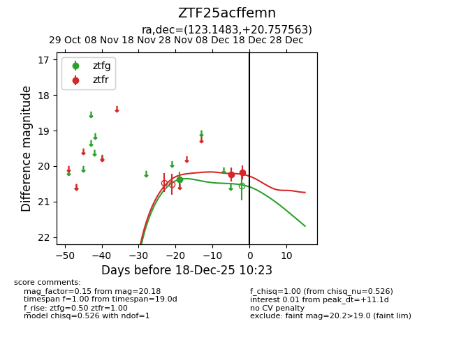
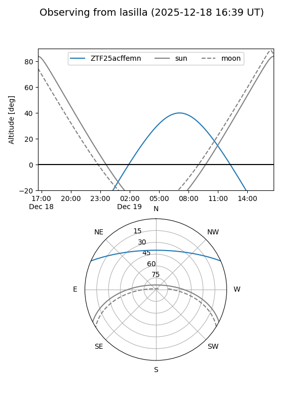
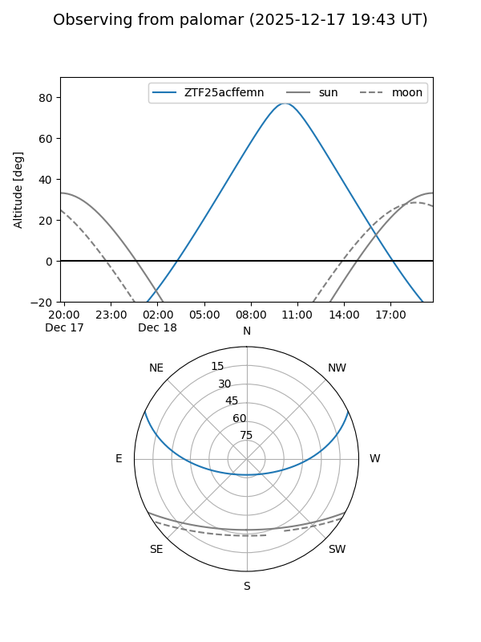

ZTF25acffemn
Target ZTF25acffemn at 2025-12-18 11:17
Aliases and brokers:
FINK: fink-portal.org/ZTF25acffemn
Lasair: lasair-ztf.lsst.ac.uk/objects/ZTF25acffemn
ALeRCE: alerce.online/object/ZTF25acffemn
alt names
ZTF25acffemn (ztf,fink_ztf)
Coordinates:
equatorial (ra, dec) = 123.1483,+20.75756
equatorial (HMS+DMS) = 08:12:35.60,+20:45:27.23
galactic (l, b) = (202.1153,+26.75531)
Photometry
last ztfg=20.37, ztfr=20.18
1 ztfg, 2 ztfr detections
Lightcurve

Visibility


Additional plots